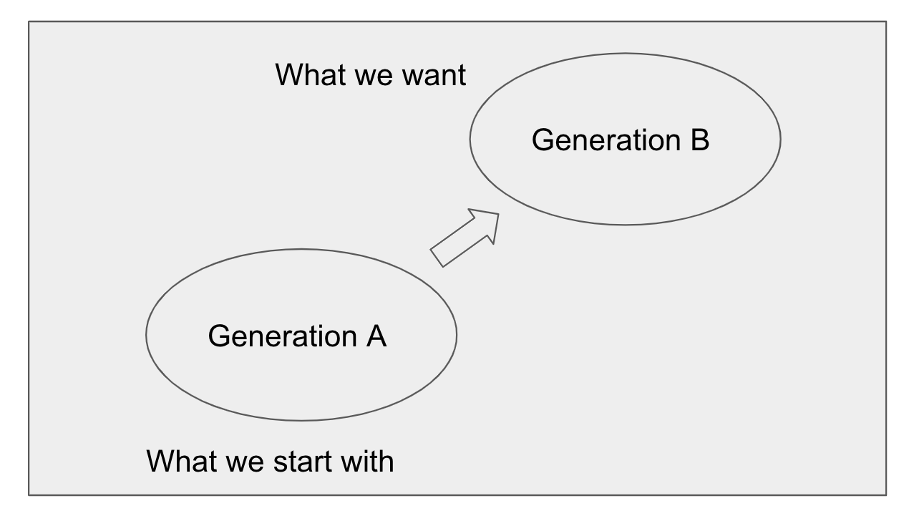
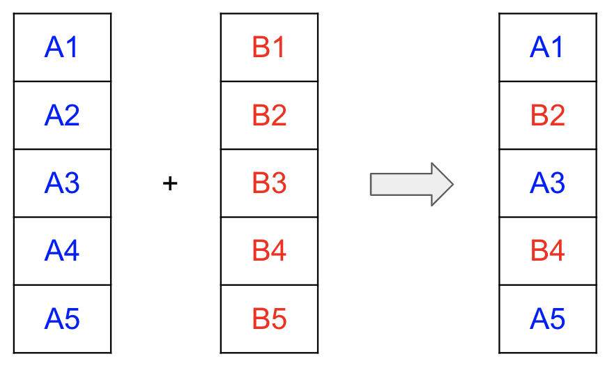
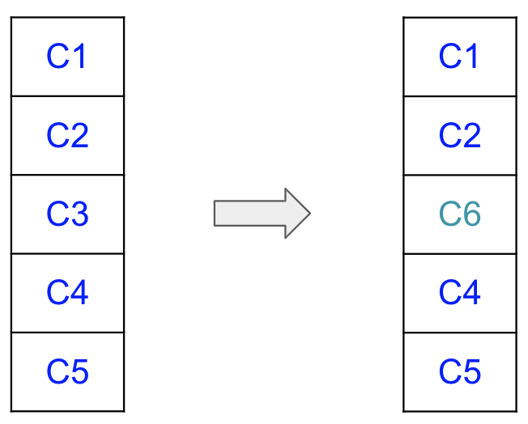

50.003 - Auto Test Generation Part 2
Learning Outcomes
By the end of this unit, you should be able to
- Apply Genetic algorithm for software testing.
- Apply Symbolic exeuction for software testing.
- Explain how to use symbolic execution for software verification.
Recap
Recall from the last unit, we learned a special version fuzzing technique which leverages on the feedback givem by the test reports.
graph
N1-->N2
N2("Execute Test Cases")-->N3
N3("Collect Feedback")-->N1("Generate Test Cases")In each iteration, we take the feedback from the previous test execution to generate the next test cases, hoping the next test cases will perform better. The process of translating the feedback to a new version of test case might be quite tricky to implement as a rule-based system.
Genetic algorithm
A possible way to automate the process of feedback-to-generate-better-test-cases is to adopt the genetic algorithm.
Genetic Algorithms were invented to mimic some of the processes observed in natural evolution. The idea with GA is to use this power of evolution to solve optimization problems. The father of the original Genetic Algorithm was John Holland who invented it in the early 1970's.
The main idea is to represent the set of all possible results, good or bad, intermediate or final as an entire population. Any subset of the entire population is considered as a generation.

The algorithm starts with randomly pick a subset as the first generation. The following steps are taken in each iteration
- compute the fitness score for each member in the current generation \(G_i\).
- pick a subset of \(G_i\), say \(G_i'\) such that all members in \(G_i'\) are fitter than the rest by a threshold.
- Use members in \(G_i'\) as "parents" to "breed" the next generation \(G_{i+1}\).
- set the current generation as \(G_{i+1}\).
The above loop terminates when either * the maximum number of iterations is reached or * the overall fitness meets the minimum requirement or * the fitness increment is smaller than threshold \(fit(G_{i+1}) - fit(G_i) < \epsilon\).
Using GA in test generation
for software testing, it is natural to apply GA.
- Let the set of all possible test inputs be the entire population. Each generatation is a proper subset of the entire population.
- Let the code coverage score be the fitness score for each test input.
- Viewing each test input as a sequence of bytes. There are at least two possible "breeding" operations.
- Cross-over. Taking two test inputs, say A and B from the \(G_i'\), and pick some random byte offsets that are common to both. Replace the bytes in A by those bytes from B based on the offsets. The result of this operation will be the member of the next generation. 
- Mutatation. Take one test input say C from \(G_i'\), randomly pick a position and change the byte at the position which form a new input in the next generation. 
Limitation of GA based test generation
GA automates the search of best test cases for the given test subject. However it might take many iterations to reach the optimal set. Consider
function example(x,y) {
let a = [[1],[2],[3],[4],[5]]
if (y == 42342531) {
a[x][0] = y // x must be [0..4]
}
}
In the above example, it will take a long time for the GA test case search to discover the bug is prensent when x=5 and y=42342531.
To reach that branch fast, we need to exploit the code structure of example(), it is kind of white box fuzzing.
Symbolic execution
Symbolic exeuction is a kind of dynamic analysis that tries to reach to all executable paths in a function. It differs from concreate execution and testing for not giving concrete values to the function being invoked, instead, some symbolic arguments are given so as to collect the information. It differs from static analysis techniques as it retains a per path level of information for analysis, (which could also be a drawback, we will discuss it shortly).
Given the function example(x,y), invoking it with a concrete value say example(100,42342531) is known as a concrete execution. Symbolic execution on the other hand, does not invoke the funciton with concrete values, instead symoblic values are passed in.
Supose A and B are two symbolic values, we can think of them as logical terms, not variable.
1: function example(A,B){
2: // A can be anything, B can be anything
3: let a = [[1],[2],[3],[4],[5]]
4: if (B == 42342531) {
5: // B must be 42342531
6: a[A][0] = B // 0 <= A < 5
7: }
8: }
From the above, we find that for the path 3->4->6->7 to be covered, B must be 42342531. By doing so, we can figure out the test case to cover that path.
Besides generating test cases, Symbolic execution can detect bugs, dead codes and redunant assertion.
For example, if we add an assertion statement at line 6,
1: function example(A,B){
2: // A can be anything, B can be anything
3: let a = [[1],[2],[3],[4],[5]]
4: if (B == 42342531) {
5: // B must be 42342531
6: assert(B>0) // B > 0
7: a[A][0] = B // 0 <= A < 5
8: }
9: }
The symbolic execution framework generates the following set of constraints for the path 3->4->6->7->8,
since the first constraint implies the second one, the second constraint is redundant.Similarly if we have the following code
1: function example(A,B){
2: // A can be anything, B can be anything
3: let a = [[1],[2],[3],[4],[5]]
4: if (B == 42342531) {
5: // B must be 42342531
6: if (B<0) { // B < 0
7: a[A][0] = B // 0 <= A < 5
8: }
9: }
10:}
The symbolic exuection framework generates the constraint set for the path 3->4->6->7->8->9->10, as
which can not be satisfied hence this path of code is not reachable.
Finally if we have the following code
1: function example(A,B){
2: // A can be anything, B can be anything
3: let a = [[1],[2],[3],[4],[5]]
4: if (B == 42342531) {
5: // B must be 42342531
6: A = B // A == B
7: a[A][0] = B //0 <= A < 5
8:
9: }
10:}
which is unsatifiable hence a bug must be present.
As we observe, symbolic execution proceeds by path following. For each path it traverse, it generates a set of constraints,
- if it is an assignment and the LHS is first time being assigned,
x = e, it generates an equality constraintx == e. - if it is an re-assignment
x = e, we need to create a fresh copy ofx, say the last defined/assigned ofxwasx_i, then addx_{i+1} == eto the constraint sets, and rename all the use ofxtox_{i+1}in the statements that come after the current one. - if it is an
if p { s1 } else { s2 }, it generate two paths with the first path havingpand the second path having!(p). - if it is a
while p { s }, it generates a path into the loop body withpas part of the constraint set, and another path with!pas it exits the loops.
We can also add extra constraints such as the reference of the array elements must be within range.
For example,
1: function sum_upto(n) {
2: let s = 0;
3: let i = 0;
4: while (i < n) {
5: s = s + i;
6: i = i + 1;
7: }
8: return s;
9: }
we first "get" rid of the while loop by unrolling it once and one.
Path 1:
Path 2:
1: function sum_upto(N) {
2: let s = 0;
3: let i = 0;
4: assert(i < N) // (i<n)
5: s = s + i;
6: i = i + 1;
7: assert(i >=N) // !(i<n)
8: return s;
9: }
We then rename the variables used in the assignments into single assignment form.
Path 1:
1: function sum_upto(N) {
2: let s0 = 0;
3: let i0 = 0;
7: assert(i0 >= N) // !(i<n)
8: return s0;
9: }
Path 2:
1: function sum_upto(N) {
2: let s0 = 0;
3: let i0 = 0;
4: assert(i0 < N) // (i<n)
5: s1 = s0 + i;
6: i1 = i0 + 1;
7: assert(i1 >=N) // !(i<n)
8: return s1;
9: }
Then we have two versions of the above.
One version of not entering the while loop body.
And another version of executing the while loop body once.1: {
2: s0 == 0 &&
3: i0 == 0 &&
4: i0 < N &&
5: s1 == s0 + i0 &&
6: i1 == i0 + 1 &&
7: !(i1 < N)
9: }
We finally can send these versions to constraint solvers to check for satisfiability.
Limitation of Symbolic execution
Symbolic execution was a nice framework with strong formalism behind and highly useful. There are several issues required more care.
Limitation of the solvers
It relias on the solver's capabilities. Hence in case of complex inequality, we might not get an answer.
Existing SMT solvers support theories on linear integer arithmetic, bit vectors, string, etc. Existing SMT solvers are not particularly scalable or efficient for certain theories e.g., non-linear arithmetic. * In such cases symbolic execution will not (always) be able to evaluate which side of the branch should be taken. * Thus, symbolic execution may randomly generate some inputs to find one of the feasible execution, losing opportunities to cover a large portion of code.
Memory object aliasing
Keeping track of constraints among variables with primitive values are straight-forward, it is not that simple when dealing with reference to objects in the heap.
For instance consider
1: class A {
2: constructor(x) { this.attr = x};
3: }
4: function foo(N) {
5: let a = new A(N); // a == mloc1 && mloc1.attr == N
6: if (a.attr == N) {
7: let b = a; // b == a
8: b.attr = N+1; // mloc1.attr == N +1
9: }
10:}
If we naively construct a set of constraint from a path from 5-->6-->7-->8-->9, we have the following
which is not satisfiable, but the above path of executions should be valid. Clearly we need a better model to manage to heap objects.Treatment of loops
Symbolic Execution does not cover all the paths, e.g. we have to fix a limit to how many time the loop can be unrolled, or require the programmers to annotate the loop with invariant (which is uncommon for day-to-day programming). For example, if a program add an invariant constraint of the while loop s <= i * (i-1) / 2, we could verify that for all
versions of s_k and i_k, satifies the invariant contraints, for example
i_{-1} is undefined but since i0 is 0, hence the above holds
This generalizes to for all k.
Thus, when N >=0,
We can then use the invariant plus the post condition i==N as the approximiated constraint set for the loop for the subsequent paths, this is to like combining static analysis with dynamic analysis.